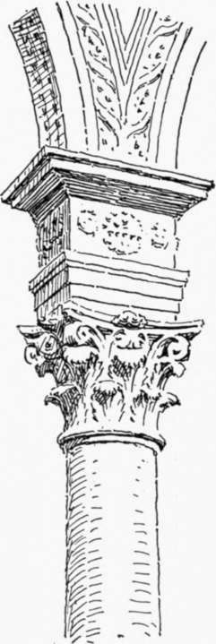

Church Architecture Of The Florentine Renaissance. Part 2
Description
This section is from the book "Character Of Renaissance Architecture", by Charles Herbert Moore. Also available from Amazon: Character of Renaissance Architecture.
Church Architecture Of The Florentine Renaissance. Part 2
In the portico (Fig. 13) the incongruities of design are of a still graver nature because they involve weakness of construction. The order of the interior is, as we have just seen, but a simulated order, and has no structural function, but in the portico a real Corinthian order is made to carry the barrel vault and dome above mentioned, and an attic wall which encloses the vaulting. But a classic order was never intended for such use, and cannot properly perform it. Such an order is adapted only to the support of crushing weight, and has no power of resistance to the thrusts of vaulting. The weight of the attic wall tends, indeed, in some measure to neutralize the force of the vault thrust, but this is not enough to render the structure secure, and unless the order were effectively steadied by some extraneous means the attic load would constitute a source of danger, as with any disturbance of its equilibrium by thrust its weight would hasten the overthrow of the system. How it is actually maintained is not apparent. No tie rods are visible beneath the vault, such as are common in Italian vaulted structures, which are rarely buttressed in an effective manner. Ties or clamps may, however, be concealed within the attic, though they would be less effective so placed. But in whatever way the system is held together, it is bad architecture, because the parts have no proper adaptation to their functions.
Fig. 13. — Facade of the Pazzi chapel.
1 As in the arch of the apse of St. Paul outside the wall at Rome, and in the Baptistery of Florence.
The ornamental treatment of the attic wall is worthy of notice. The surface is divided into panels by diminutive pilasters, and these panels are subdivided by mouldings in a manner which recalls the treatment of the attic of the Baptistery. The coupling of the pilasters was an innovation in the use of classic members, but it enabled the architect to avoid unpleasant proportions in these details. Single pilasters of the same magnitude would be too slender for the deep entablature over them, or to harmonize with the great Corinthian order below, while wider single ones would be stumpy and inelegant. The pair give good proportion in the total composition, while each pilaster is well proportioned in itself. Another noticeable point is the manner in which the central archivolt and the archivolts spanning the ends of the porch intersect the pilasters at the springing. This could not be avoided, because the pilasters cover the whole space on the entablature over the capitals of the columns, and leave no place for the archivolts. Thus the mediaeval principle of interpenetration is carried over into the neo-classic design.
It should be observed that the details of this attic are wrought in stucco, so that we have with the beginning of the Renaissance a revival of a common ancient Roman practice of architectural deceit. The great order, however, is necessarily of stone, and its general proportions are good, though the details are poor in design, and coarse in execution.1
The facade of the Pazzi has been considered as showing noteworthy originality of design. But there are older buildings in the neighbourhood to which it bears enough likeness to suggest its derivation from them. The facade of the Badi'a of Fiesole (Fig. 14) is one of these. By substituting a free-standing colonnade for the blind arcade of this front, and breaking its entablature and attic wall with an arch, we should get the leading features of the Pazzi front. Sant' Jacopo Soprarno, with its attic surmounting an open portico having an arcade on Corinthian columns, is also strongly suggestive of the same scheme. The features that are peculiar to the Pazzi, the arch breaking the entablature, the barrel vault sprung from the order, and the dome bisecting this vault, do little credit to the architect as a consistent designer.
Fig. 14. — Baclia of Fiesole.
1 The character of these details will be discussed in the chapter on the carved ornament of the Renaissance.
Two more important examples of church architecture in Florence, which appear to be mainly by Brunelleschi, are San Lorenzo and Santo Spirito. What part Brunelleschi had in the design of San Lorenzo is not perfectly clear,1 but the main scheme was probably his, though the work was not completed until after his death. In the old sacristy of this church, which appears to be the part that was first built, the interior design of the Pazzi chapel is reproduced with some modifications of proportions and details, including the celled vault on a system of ribs, resting on pendentives. The church itself exhibits a frank return to primitive basilican forms and methods of construction, though with modifications and some additions. The' nave has a flat wooden ceiling, but the aisles are covered with domical vaulting on salient transverse ribs, and over the crossing is a hemispherical dome on pendentives. In the arcades, which are carried on Corinthian columns like those of the portico of the Pazzi, the entablature blocks of late Roman design are reproduced in the impost (Fig. 15). The revival of this meaningless feature shows again how little impression the logic of mediaeval art had made on the Italian mind, and what lack of discrimination in their borrowings from the antique the designers of the Renaissance often show. Whatever features the Roman models displayed were looked upon as authoritative, and copied without question; and the frequency with which this superfluous detail was reproduced in the subsequent architecture of the Renaissance has given it wide acceptance in more recent times. Notwithstanding the intention of the designer to revive the ancient style, mediaeval features are conspicuous in San Lorenzo, and something of the mediaeval logic of structural adjustment occurs in some details. Not only is the dome over the crossing supported on pendentives, which, in their developed form, are mediaeval features and thus foreign to classic Roman design, but the piers sustaining this dome are compound, and consist of members of different proportions adjusted in the organic mediaeval manner. The members which take part in the support of the aisle arcades are necessarily short, while those which carry the great pendentive arches are lengthened to reach the higher level from which those arches spring. But all of these members have the form of fluted Corinthian pilasters (Fig. 16). Thus were classic members used in ways that are foreign to classic principles, and their proportions altered with as much disregard for the rules of Vitruvius as the mediaeval builders had shown.
Fig. 15. — Impost of San Lorenzo.
Fig. 16. —Crossing pier of San Lorenzo.
1 Cf. Vasari, Opere, vol. 2, p. 368 et seq., and Milanesi's foot-note, p. 370.
Continue to:
- prev: Chapter III. Church Architecture Of The Florentine Renaissance
- Table of Contents
- next: Church Architecture Of The Florentine Renaissance. Part 3